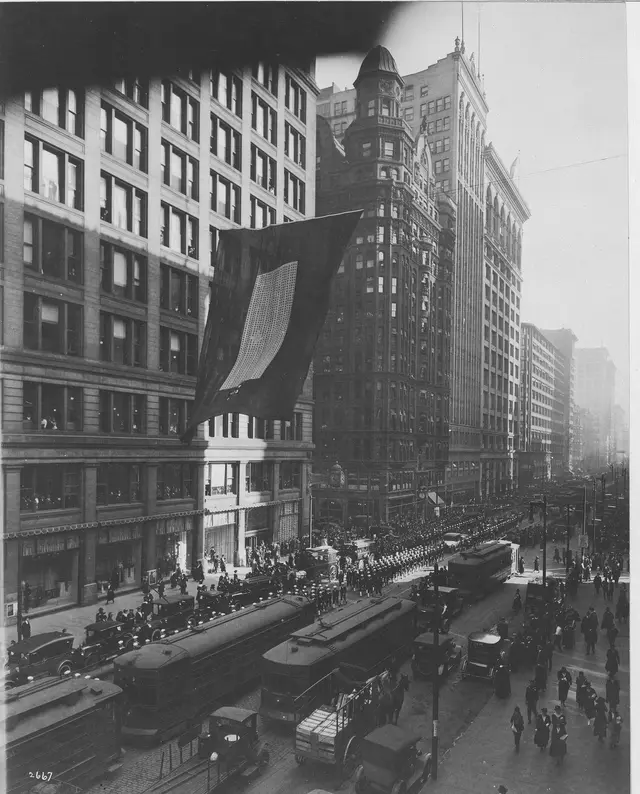
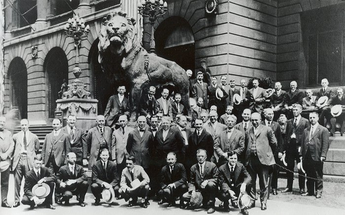
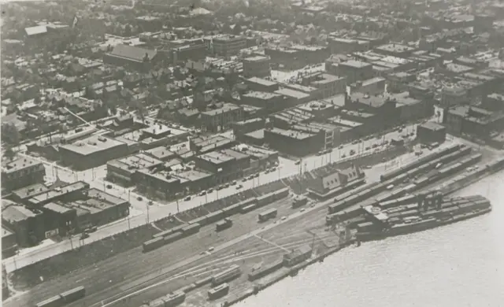
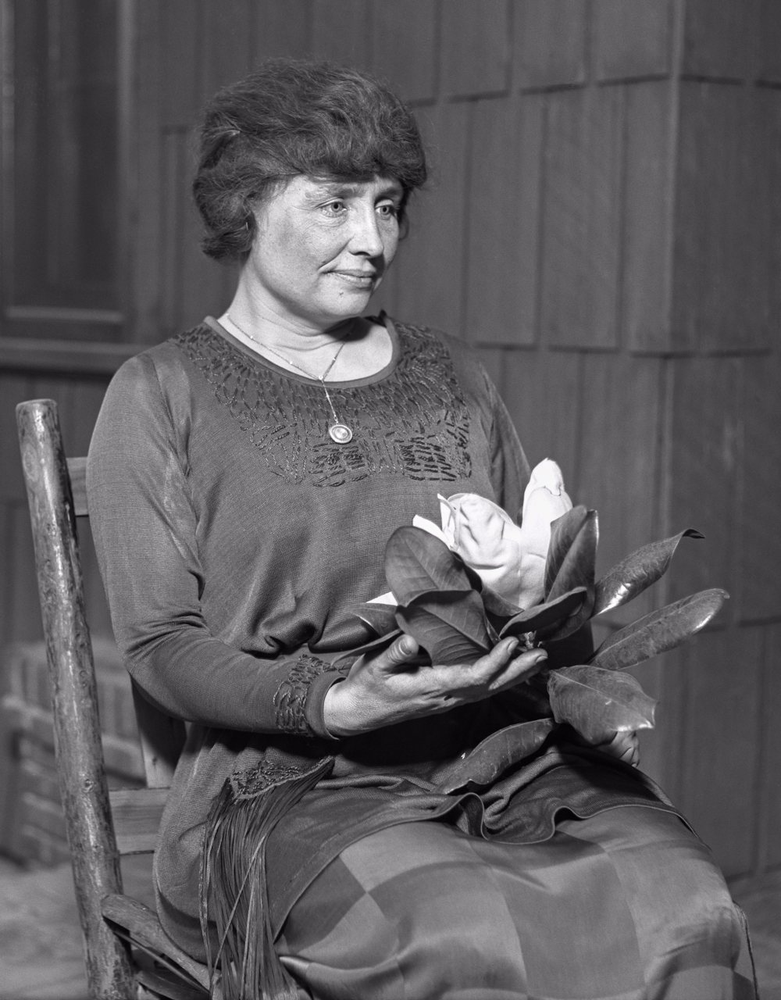
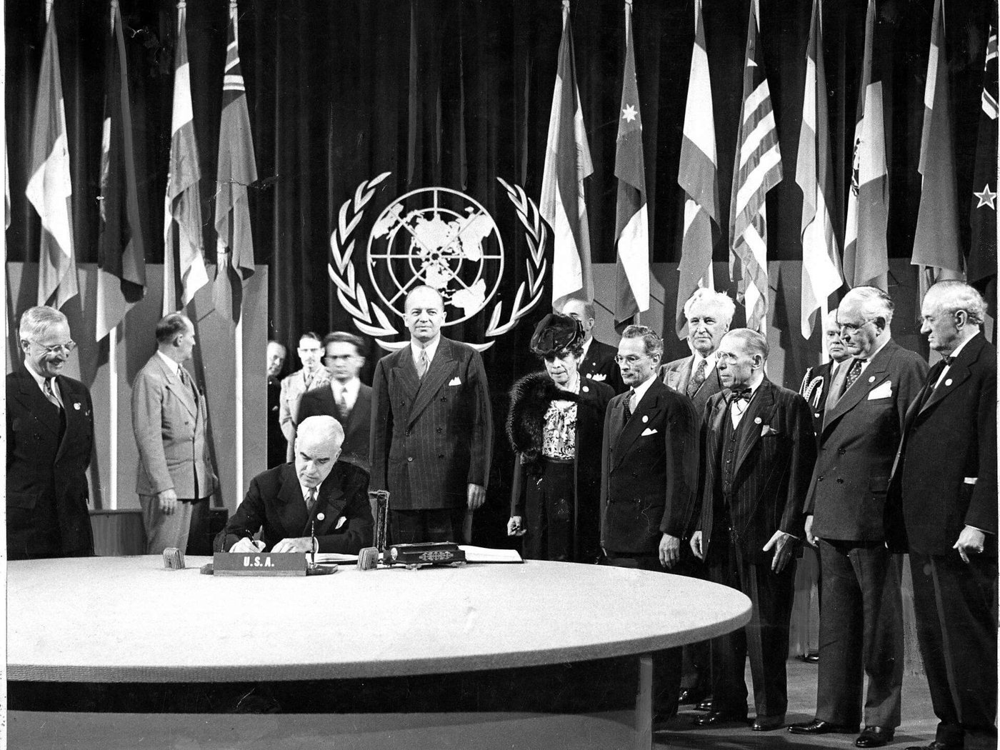
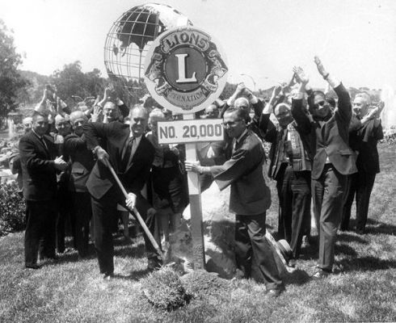
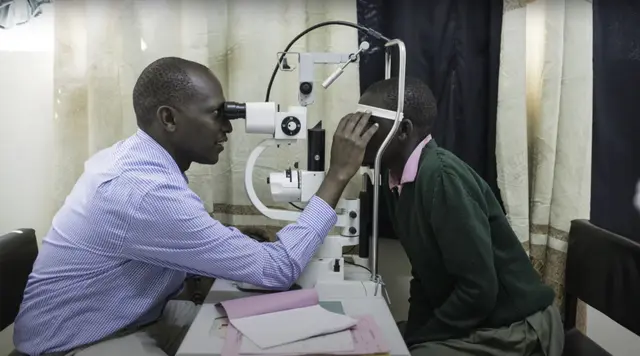
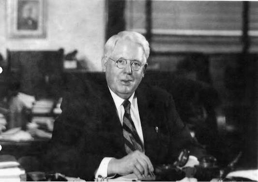
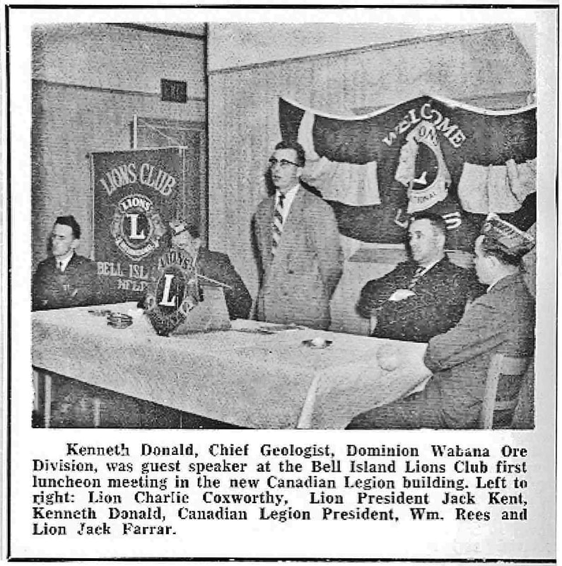

The Lions story: one question, a worldwide answer
How a lunch-club conversation in Chicago became the world’s largest service organisation, and why a Leo club in Matara is part of it.
Chicago, June 1917
A lunch club asks a bigger question
Melvin Jones ran an insurance agency in Chicago and was secretary of a business lunch club. In the spring of 1917 he put a simple thought to its members: what if people who are good at business used that talent to make their cities better?
On 7 June 1917 a group of business leaders met to talk it through. That conversation is the first page of the Lions story.

Dallas, October 1917
Twenty-four clubs, one set of rules
Clubs from across the country met in Dallas that autumn and agreed to become one association. They chose a first president, wrote a short code, and made promises that still hold: no party politics, no sectarian religion, and service with no expectation of private gain.

Windsor, Ontario
The first club beyond the border
In 1920 the Lions chartered a club in Windsor, Ontario. With that, the association became international in fact as well as in name. Clubs followed across continents, and today Lions serve in more than two hundred countries and regions.

Cedar Point, Ohio
A challenge from Helen Keller
At the 1925 convention, Helen Keller, who was deaf and blind, stood before the Lions and asked them to become knights of the blind in the crusade against darkness.
They said yes. Sight has been a Lions cause ever since, from eye screening and cataract surgery to the white canes that the Lions Club of Colombo handed out in its first project.

San Francisco
Lions help shape the UN Charter
In 1945 the Lions were invited to San Francisco to help draft the Charter of the United Nations. Lions Clubs International has held consultative status with the UN ever since, which gives a club in Matara a small seat at a very large table.

Two words
“We Serve” becomes the motto
In 1954 members chose a motto from entries sent in by Lions themselves. The winner was two words long: We Serve. It fits on a badge, a banner or a vest, and it describes everything a Lions or Leo club does.
By the 1960s the association was chartering clubs by the thousand, and it kept counting upward from there.

SightFirst
Taking on preventable blindness
Sixty-five years after Helen Keller’s challenge, the Lions launched SightFirst, a worldwide programme to fight blindness that can be prevented or reversed. It funds eye clinics, surgeons and training in places where care is hard to reach.

The record
Key dates, in order
Founded
Melvin Jones and a group of business leaders meet in Chicago in June. Delegates meet in Dallas in October to form the association.
First club outside the United States
Windsor, Ontario joins the association.
The Helen Keller address
Lions take on sight as a defining cause.
A seat at the table
Lions are invited to help shape the United Nations Charter in San Francisco, and hold consultative status with the UN today.
The motto is chosen
“We Serve” is adopted after a vote among members.
Leo is born
A Pennsylvania Lions club sponsors a high school service club, and the Leo idea begins.
Lions reach Sri Lanka
The Lions Club of Colombo is formed, the mother club of the movement in the country.
Lions Clubs International Foundation
The charitable arm that funds large-scale humanitarian work is established.
SightFirst
A worldwide programme to fight preventable and reversible blindness begins.
One hundred years
The association celebrates its centenary.
From the archive
More faces from the early years


Photos come from public archives and Wikimedia Commons. If you own one and would like a credit or a change, message us on Instagram.
Where this leads
And then came the Leos
Forty years into their story the Lions gave young people a club of their own. That is where we come in.
Read it at the source
We wrote this story in our own words from the public history of Lions Clubs International and Leo Multiple District 306. Where sources give slightly different dates, we use the more cautious wording.